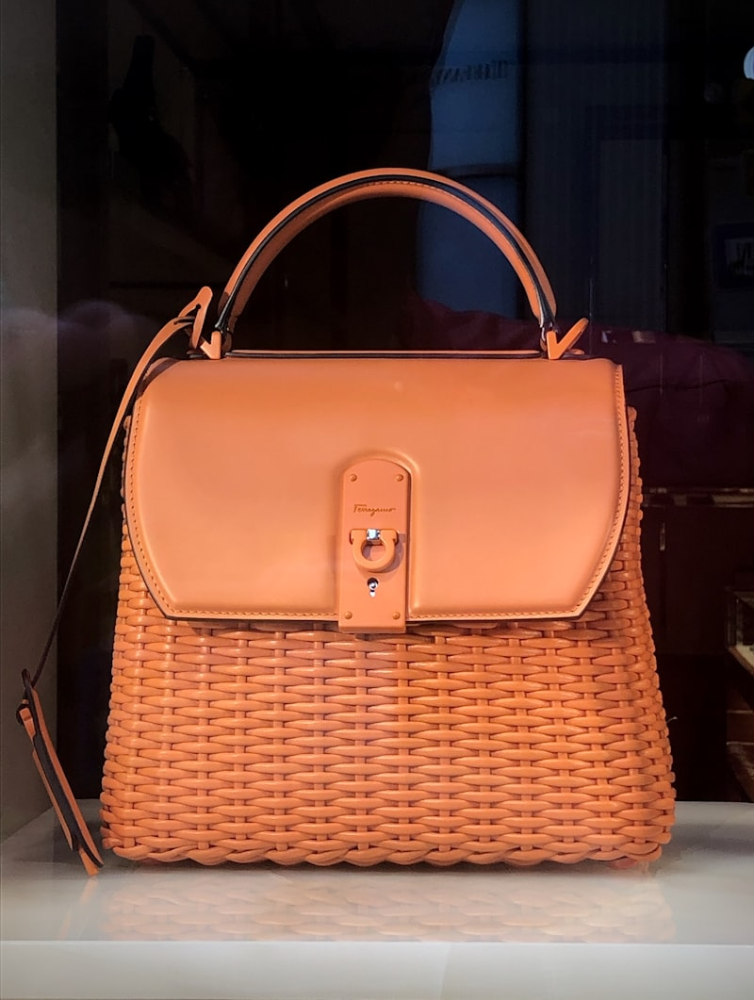

THE GAZETTE
The Venetian Leather Gazette
Our research articles on full-grain Italian leather, two-needle hand saddle stitching, and hardware craftsmanship.

Leather Science
Full-Grain vs Bonded Leather
Analyzing fiber density, organic vegetable tanning, and natural patina evolution.
Read Article →
Craft Physics
Hand Saddle Stitching Physics
Why two-needle saddle stitching outlasts machine lockstitches by decades.
Read Article →
Patina Care
Calfskin Care & Patina Guide
Nourishing full-grain leather with organic beeswax balm to cultivate deep golden luster.
Read Article →
Guild History
Venetian Leathercraft History
Exploring medieval Venetian leather guilds, gold leaf stamping, and burnishing traditions.
Read Article →
Atelier Design
Anatomy of an Evening Clutch
Deconstructing turn-lock clasp mechanisms, silk lining, and hand-skived leather edges.
Read Article →
Selection Guide
Choosing the Perfect Tote
Matching handle drop lengths, interior compartment splits, and leather thickness.
Read Article →
Metallurgy
24K Gold Hardware Plating
Comparing solid machined brass and electroplated gold against cheap zinc castings.
Read Article →